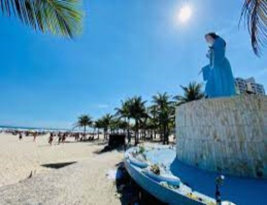

Realidade
O Dia a Dia é uma realidade, uma necessidade, um aprendizado que não podemos parar, um ritmo de vida que assumimos com um propósito de crescimento e inovação, uma busca por uma vida confortável.
Liberdade

Aqui se faz a necessidade do espirito, a procura de uma higiene mental, a renovação das energias e das ideias, de um ideal, a busca da renovação para encararmos todos os obstáculos e com o propósito da superação.
Futuro
Uma consequência do esforço e da dedicação, um resultado das metas alcançadas, chegamos à busca de uma renovação e aprendizagem, que esquecemos de adquirimos na correria do dia a dia.
Solidariedade
Uma ação, a solidariedade é um gesto que pode mudar a vida do próximo, uma atitude que engrandece a alma e abre um novo horizonte.